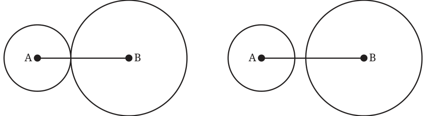
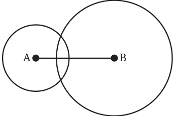
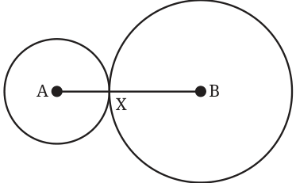
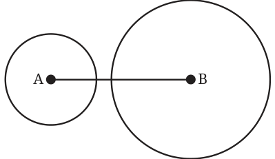
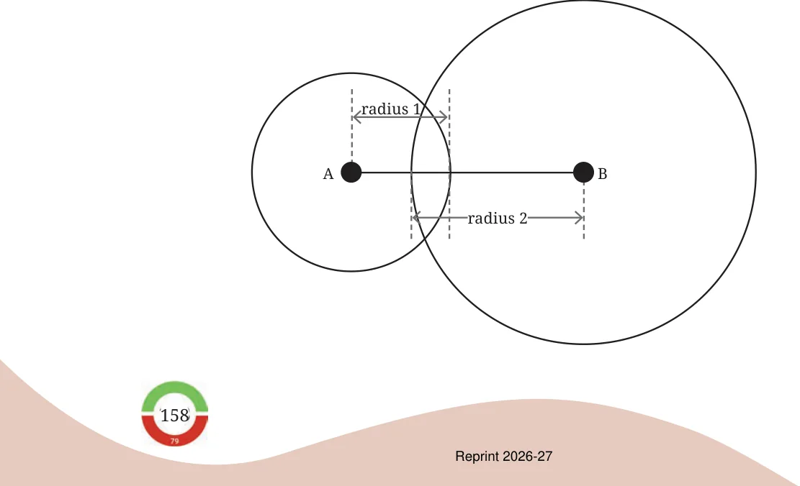

- 1.Which of the following lengths can be the sidelengths of a triangle?
Explain your answers. Note that for each set, the three lengths have the same unit of measure.
- (a)2, 2, 5 (b) 3, 4, 6
- (c)2, 4, 8 (d) 5, 5, 8
- (e)10, 20, 25 (f) 10, 20, 35
- (g)24, 26, 28
We observe from the previous problems that whenever there is
a set of lengths satisfying the triangle inequality (each length < sum of the other two lengths), there is a triangle with those three
lengths as sidelengths.
Will triangles always exist when a set of lengths satisfies the triangle inequality? How can we be sure?
We can be sure of the existence of a triangle only if we can show that the circles intersect internally (as in Fig. 7.5) whenever the triangle inequality is satisfied. But are there other possibilities when the two circles are constructed? Let us visualise and study them. The following different cases can be conceived:

Case 1: Circles touch each other Case 2: Circles do not intersect

Case 3: Circles intersect each other internally
Note that while constructing the circles, we take
- (a)the length of the base \(AB =\) longest of the given length
- (b)the radii of the circles to be the smaller two lengths.
Which of the above-mentioned cases will lead to the formation of a triangle? Clearly, triangles are formed only when the circles intersect each other internally (Case 3).
Let us study each of these cases by finding the relation between the radii (the smaller two lengths) and AB (longest length).
Case 1: Circles touch each other at a point
For this case to happen,
sum of the two radii \(= AB\)
sum of the two smaller lengths = longest length

Case 2: Circles do not intersect internally
For this case to happen, what should be the relation between the radii and AB? It can be seen from the figure that,
sum of the two radii \(< AB\)
sum of the the two smaller lengths < longest length

Case 3: Circles intersect each other

AB is composed of one radius and a part of the other. So,
sum of the two radii \(> AB\),
sum of the two smaller lengths > longest length
Can we use this analysis to tell if a triangle exists when the lengths satisfy the triangle inequality? If the given lengths satisfy the triangle inequality, then the sum of the two smaller lengths is greater than the longest length. This means that this will lead to Case 3 where the circles intersect internally, and so a triangle exists.
How will the two circles turn out for a set of lengths that do not satisfy the triangle inequality? Find 3 examples of sets of lengths for which the circles:
- (a)touch each other at a point,
- (b)do not intersect.
Frame a complete procedure that can be used to check the existence of a triangle.
Conclusion
If a given set of three lengths satisfies the triangle inequality, then a triangle exists having those as sidelengths. If the set does not satisfy the triangle inequality, then a triangle with those sidelengths does not exist.